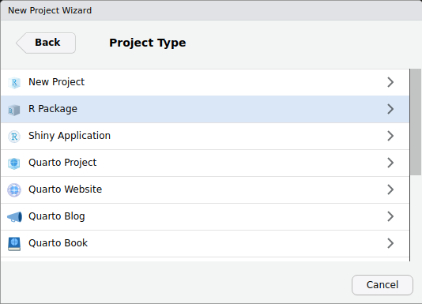

install.packages("devtools")Tworzenie pakietów w R
R
Po co pisać własne pakiety w R? Widzę dwa powody. Po pierwsze możemy mieć pewną kolekcję funkcji, których często używamy w różnych analizach. Możemy je w pewnym momencie chcieć zebrać w jedno miejsce. Po drugie możemy chcieć się podzielić naszymi funkcjami z innymi, czy to z zespołem, czy ze światem. W obu przypadkach pakiet jest lepszą, bardziej uporządkowaną i łatwiejszą w używaniu opcją niż pliki ze skryptami.
Pakiety to nic innego jak zbiory funkcji. Od zwykłych plików .R z funkcjami różnią się tym, że mają określoną strukturę, dzięki której można je potem zainstalować i szybko zacząć wykorzystywać. Pewnie pierwszym skojarzeniem z pisaniem pakietów jest udostępnianie ich całej społeczności przez CRAN. Owszem, można to zrobić, ale można mieć też prywatne pakiety trzymane na GitHubie. Wtedy taki pakiet może być chałupniczy, niepełny, nieelegancki, ale i tak jest lepszą drogą, niż luźne pliki z definicjami funkcji. Dzięki temu nie musimy od razu wszystkiego zrobić na tip-top, żeby każdy na świecie wygodnie korzystał z naszych trzech funkcji. Naszym celem jest w końcu oszczędzenie sobie pracy, nie dołożenie.
1 Przygotowanie
Do tworzenia pakietów wykorzystujemy inne pakiety. Najważniejszym z nich jest devtools, który ciągnie za sobą cały szereg innych pakietów typu roxygen2, usethis czy testthat. Możesz nawet mieć już zainstalowane devtools, bo to w jego skład wchodzi funkcja install_github(), dzięki której instalujemy pakiety z GitHuba1. Jeśli nie masz jeszcze zainstalowanego pakietu devtools, zainstaluj go teraz.
W tym tekście będę używał pełnych nazw funkcji, np. usethis::use_readme_md(). Jeśli jednak na początku pracy załadujesz devtools, nie musisz później podawać nazw pakietów.
Najprostszym sposobem na utworzenie zrębu pakietu R jest wykorzystanie menu do tworzenia projektów w RStudio. Podczas tworzenia projektu możemy wybrać jego typ i nas interesuje R package. W wygodnym kreatorze wpisujemy nazwę pakietu. Warto też zaznaczyć, że chcemy mieć do tego repozytorium Git. Jeśli zabieramy się za tworzenie pakietu, powinniśmy umieć choć w podstawowym stopniu korzystać z Gita. Jeśli nie znasz Gita, zachęcam do przeczytania tego posta.

2 Struktura pakietu
Stworzony przez nas szkielet pakietu już ma określoną strukturę. W wybranym wcześniej folderze znajdziemy serię szczególnych plików i folderów, która potem będzie się rozrastać. Obecnie są to:
.gitignore– plik repozytorium mówiący, co Git ma ignorować (więcej o tym w tekście o Git)..Rbuildignore– plik, w którym podajemy niestandardowe pliki, które z jakiegoś powodu znajdują się w folderze z naszym pakietem; jest to ważne, bo R-CMD-check (o którym więcej w podrozdziale 8) będzie na nas krzyczał, jeśli znajdzie niestandardowe pliki w nietypowych miejscach.DESCRIPTION– metadane naszego pakietu, przede wszystkim nazwa, wersja, autorzy i pakiety, których nasz pakiet wymaga do działania.man– folder z plikami .Rd z dokumentacją naszych funkcji; nie edytujemy ich ręcznie.NAMESPACE– plik z przestrzenią nazw naszego pakietu; nie edytujemy go ręcznie.R– folder, do którego wrzucamy pliki .R z naszymi funkcjami; najważniejsza część naszego pakietu.
Do tego jeszcze znajdziemy tam plik z projektem RStudio. W miarę budowania naszego pakietu, nasz folder będzie się zaludniał nowymi plikami i podfolderami.
Już teraz warto jest uruchomić kilka komend z pakietu usethis, które ułatwią nam robotę w przyszłości. Są to funkcje, których zazwyczaj używamy tylko raz, one wykonują swoją robotę (coś tworzą, coś dopisują) i zapominamy o ich istnieniu, aż nie musimy stworzyć kolejnego pakietu.
Po pierwsze musimy przygotować nasz pakiet do używania roxygen2, czyli specjalnego standardu generującego dokumentację naszych funkcji. Dzięki niemu nie musimy ręcznie babrać się z plikami .Rd. Zaczynamy więc od usunięcia pliku NAMESPACE, który wytworzyło RStudio. Dlaczego? Bo nasz plik NAMESPACE ma stworzyć roxygen2, a nie RStudio. Po usunięciu używamy komendy roxygen2::roxygenise(). Doda ona do pliku DESCRIPTION informację o używanej wersji roxygen2 oraz stworzy nowy, piękny, prawie pusty plik NAMESPACE. Następnie używamy komendy usethis::use_roxygen_md()2. Pozwoli ona używać nam wygodnej składni markdown w dokumentacji, np. **bold** wygeneruje nam pogrubiony tekst. Więcej o podstawach markdown przeczytamy na przykład tutaj.
3 DESCRIPTION
Plik DESCRIPTION, jak już wspomniałem, to opis naszego pakietu. Jeśli otworzymy go teraz, zobaczymy przygotowany wcześniej szkielet. Możemy w nim uzupełnić tytuł, wersję i opis pakietu. Jeśli opis zajmie więcej niż linijkę, kolejne linijki powinny zaczynać się wcięciem wielkości 4 spacji.
3.1 Autorzy
Jeśli chodzi o autorów pakietu, podajemy ich w dość specyficzny sposób. Najpierw jednak kasujemy całą linijkę Maintainer. To część starego standardu, dziś osobę odpowiedzialną za kod podajemy w polu autorów. Samych autorów podamy za pomocą funkcji person(). Pokażmy to sobie na przykładzie.
DESCRIPTION
Authors@R: person(
"Jakub", "Jędrusiak",
email = "kuba23031999@gmail.com",
role = c("aut", "cre"),
comment = c(
ORCID = "0000-0002-6481-8210",
affiliation = "University of Wrocław"
)
)Po pierwsze znacznik Author zmieniamy na Authors@R i to niezależnie od liczby autorów. Jeśli autor jest jeden, podajemy go za pomocą funkcji person(). Podstawowe informacje to imię w pierwszym argumencie3, nazwisko w drugim. Tych argumentów nie musimy nazywać. Dalej mamy inne informacje, które już nazwać warto. email jaki jest, każdy widzi. role to opis funkcji osoby w tworzeniu pakietu. Używamy tutaj kodów opisanych w dokumentacji funkcji person(). Kilka podstawowych kodów ról wymieniam w tabeli poniżej. Jak widać w przykładzie, każda osoba może mieć więcej niż jedną rolę. Kolejnym polem jest comment, który zawsze podajemy w postaci nazwanego wektora. Podstawowymi informacjami, które możemy tutaj umieścić, są numer ORCiD oraz afiliacja.
| Kod | Funkcja | Opis |
|---|---|---|
"aut" |
Author | Pełny autor; wszystkie osoby, które pojawiają się w cytowaniu, powinny mieć przypisaną tę rolę. |
"cre" |
Creator | Osoba odpowiedzialna za dbanie o kod w pakiecie (maintainer). |
"ctb" |
Contributor | Osoby, które wniosły jakiś istotny wkład w pakiet, ale za mały, by pojawiać się w cytowaniu. |
"cph" |
Copyright holder | Osoba lub instytucja posiadająca prawa autorskie do pakietu. |
Jeśli autorów jest więcej niż jeden, podajemy ich w postaci wektora osób. Poniżej przykład.
DESCRIPTION
Authors@R: c(
person(
"Boris", "Forthmann",
email = "boris.forthmann@uni-muenster.de",
role = "aut",
comment = c(
ORCID = "0000-0001-9755-7304",
affiliation = "University of Münster"
)
),
person(
"Maciej", "Karwowski",
email = "maciej.karwowski@uwr.edu.pl",
role = "aut",
comment = c(
ORCID = "0000-0001-6974-1673",
affiliation = "University of Wrocław"
)
),
person(
c("Roger", "E."), "Beaty",
email = "rebeaty@psu.edu",
role = "aut",
comment = c(
ORCID = "0000-0001-6114-5973",
affiliation = "Pennsylvania State University"
)
),
person(
"Jakub", "Jędrusiak",
email = "kuba23031999@gmail.com",
role = c("aut", "cre"),
comment = c(
ORCID = "0000-0002-6481-8210",
affiliation = "University of Wrocław"
)
)
)3.2 CITATION
Jeśli chcemy, by nasz pakiet był cytowany w jakiś konkretny sposób, możemy wprost go wskazać w pliku CITATION. Wytwarzamy go już po uzupełnieniu koniecznych informacji w pliku DESCRIPTION za pomocą komendy usethis::use_citation(). Sam plik siedzi sobie w folderze inst. Umieszczamy w nim informacje o cytowaniu w formacie BibTeX (każdy generator potrafi taką wytworzyć), a jeśli chcemy, to także wersję tekstową. Decyduje to o sposobie, w jaki wyświetla się wynik funkcji citation(). Poniżej przykładowy plik CITATION i jego efekt.
CITATION
citHeader("To cite mtscr in publications use:")
citEntry(
entry = "Manual",
title = "Multidimensional Top Scoring for Creativity Research",
author = "Boris Forthmann, Maciej Karwowski, Roger E. Beaty, Jakub Jędrusiak",
year = "2023",
url = "https://github.com/jakub-jedrusiak/mtscr",
textVersion = paste(
"Forthmann, B., Karwowski, M., Beaty, R. E., Jędrusiak, J. (2023). Multidimensional Top Scoring for Creativity Research. Retrieved from: https://github.com/jakub-jedrusiak/mtscr"
)
)citation("mtscr")To cite mtscr in publications use:
Forthmann, B., Karwowski, M., Beaty, R. E., Jędrusiak, J. (2023).
Multidimensional Top Scoring for Creativity Research. Retrieved from:
https://github.com/jakub-jedrusiak/mtscr
Wpis BibTex dla użytkowników LaTeX to
@Manual{,
title = {Multidimensional Top Scoring for Creativity Research},
author = {Boris Forthmann and Maciej Karwowski and Roger E. Beaty and Jakub Jędrusiak},
year = {2023},
url = {https://github.com/jakub-jedrusiak/mtscr},
}3.3 Licencja
Swój kod warto wprost licencjonować, ale licencji nie dodajemy do pakietu ręcznie. Używamy tutaj odpowiedniej funkcji z pakietu usethis, np. dla licencji MIT będzie to usethis::use_mit_license(), a dla GPL v.3 usethis::use_gpl3_license(). Pełną listę dostępnych licencji można znaleźć tutaj. Jaką licencję wybrać? Najprościej mówiąc, MIT to de facto pójście we w pełni wolny kod. Taki kod może np. stać się częścią płatnego programu, ale nasze prawa autorskie w stosunku do niego ciągle obowiązują. GPL natomiast wymusza, by programy oparte na naszym kodzie też były licencjonowane pod GPL, czyli by zawsze były darmowe. Większość pakietów R (ok. 70%) korzysta z licencji GPL.
3.4 Zależności
Najpewniej nie będziemy pisać całego naszego kodu w podstawowym R, a raczej będziemy wykorzystywać w nim inne pakiety. Żeby dodać jakiś pakiet jako zależność, używamy np. usethis::use_package("rlang", "dplyr"). Nie należy nigdy podawać tidyverse jako zależności, a raczej konkretne pakiety typu dplyr czy stringr. Do tego możemy wymusić wykorzystanie konkretnej minimalnej wersji danego pakietu argumentem min_version, np. pisząc usethis::use_package("dplyr", min_version = "1.1.0").
Jeśli zerkniemy w plik DESCRIPTION po uruchomieniu takiej komendy, zobaczymy, że dodane pakiety znalazły się w sekcji Imports. Tak powinno być. Istnieją jednak inne możliwe sekcje. Jeśli dodajemy pakiet, który nie jest potrzebny do działania naszych funkcji, ale na przykład potrzebujemy go do uruchomienia przykładów (bo chociażby wykorzystujemy w nich dane diamonds z pakietu ggplot2, podczas gdy nie wykorzystujemy samego ggplot2 w naszych funkcjach), dodajemy go w sekcji Suggests. Robimy to pisząc na przykład usethis::use_package("ggplot2", type = "Suggests").
Istnieje seria zależności, które posiada większość pakietów i które można łatwo dodać poprzez specjalne funkcje z pakietu usethis. Wymieńmy sobie te najważniejsze:
usethis::use_pipe()– dodaje obsługę potoków%>%z pakietumagrittr.usethis::use_tibble()– dodaje obsługętibblejako formy, w której nasze funkcje zwracają dane.usethis::use_tidy_dependencies()– standardowe zależności typurlang,cliczyglue. Według mnie powinno się uruchamiać zawsze.usethis::use_tidy_eval()– podstawowe pakiety do Tidy Eval. Według mnie powinno się uruchamiać zawsze.usethis::use_lifecycle()– dodaje zależność od pakietulifecycle, dzięki któremu możemy oznaczyć nasze funkcje jako eksperymentalne albo wycofane. Więcej informacji tutaj.
Dodatkowo większość pakietów posiada wprost wskazaną zależność od samego R. Taka zależność musi pojawić się w sekcji Depends (zamiast standardowego Imports) i musi uwzględniać minimalną wersję co najmniej 3.5.04. W praktyce najlepiej jest podawać minimalną wersję 4.1.0, bo w tej wersji dodano natywny potok |>, a już w ogóle najlepiej nie cofać się przed 4.2.0, kiedy potoki wzbogacono o _, czyli informację, gdzie ma się znaleźć dany argument, jeśli nie na pierwszym miejscu (odpowiednik . w magrittr). Można to wykonać funkcją usethis::use_package("R", type = "Depends", min_version = "4.2.0"). Zwrócę tutaj uwagę, że trzecia liczba w zależności od R musi być zero. Nie można podać na przykład zależności z minimalną wersją 4.2.2.
4 README
Każde repozytorium powinno mieć plik README, czyli opis, który wyświetli się na stronie pakietu na GitHubie. Gdy tworzymy pakiet R, mamy dwie możliwości, jakiego rodzaju plik README wytworzymy.
README.md– opcja klasyczna, wytwarza zwykły plik markdown.README.Rmd– opcja fajniejsza, wytwarza plik .Rmd, w którym możemy dorzucać przykładowy kod w R razem z jego efektami.
Pierwsza opcja wymaga użycia komendy usethis::use_readme_md(). Wytworzy ona zwykły plik .md, który możemy wypełnić korzystając z instrukcji na GitHubie. Jeśli chcemy zyskać dostęp do możliwości oferowanych przez RMarkdown, używamy usethis::use_readme_rmd(). Wytworzy to plik .Rmd, w którym możemy pokazać, na co stać nasz pakiet. Dokładny opis składni znajdziemy tutaj, zaś poniżej przykład.
The main function is `mtscr_scores()` which can return a df with scores for each participant, each item or each participant-item combination. Scores come from two models – `all_max` and `all_top2`. A value for a participant is the maximum value predicted by the model for that participant.
```{r}
library("mtscr")
data("mtscr_creativity", package = "mtscr")
```Jeśli zdecydujemy się na tę opcję, zawsze edytujemy plik README.Rmd, a nie README.md. GitHub nie potrafi go jednak odczytać, dlatego przed wysłaniem naszych plików na serwer musimy przekonwertować plik README.Rmd do pliku README.md. Robimy to prostą komendą devtools::build_readme(). Komenda usethis::use_readme_rmd() dodatkowo dodaje specjalną przypominajkę, która nie pozwala nam zrobić commitu, jeśli zmienialiśmy plik README.Rmd, a go nie wyeksportowaliśmy.
Na marginesie dodam, że RMarkdown jest powoli zastępowany przez bliźniaczy standard Quarto, ale w chwili, gdy to piszę, usethis nie planuje go wdrażać.
4.1 Odznaki
Bardzo często w repozytoriach znajdziemy odznaki. Są to elementy informacyjno-ozdobne, które mówią coś o naszym pakiecie, np. że przechodzi testy, że jest w CRAN albo ile razy w miesiącu ktoś go pobiera. Ciekawe odznaki obejmują:
Odznakę
R-CMD-check, o której piszę w podrozdziale 5.1.Odznakę
lifecycle, którą możemy poinformować, że nasz pakiet jako całość jest eksperymentalny, stabilny lub wycofany. Możemy ją dodać wykorzystując komendęusethis::use_lifecycle_badge("stable"). Argument wybieramy jaki chcemy, zgodnie z listą dostępną tutaj.Odznakę CRAN, która informuje, jaka wersja naszego pakietu dostępna jest w CRAN. Jeśli pakiet nie jest dostępny, to odznaka też może o tym poinformować. Dodajemy ją komendą
usethis::use_cran_badge().
Odznaki nie są obowiązkową częścią pakietu, ale piszę o nich, bo lubię takie ładne pierdółki. Inne przykłady odznak znajdziemy na shields.io, albo wykorzystując pakiet badger.
5 GitHub
Zazwyczaj swoje pakiety chcemy trzymać na GitHubie5, żeby łatwo je instalować. Żeby podłączyć nasze repozytorium do GitHuba, musimy użyć po kolei dwóch komend.
usethis::use_git()
usethis::use_github(private = TRUE)Pierwsza dostosuje nasze repozytorium do ogólnych dobrych standardów. Druga podłączy nas do GitHuba, wytwarzając nowe repozytorium. Jeśli chcemy, by było prywatne, ustawiamy private = TRUE.
5.1 R-CMD-check na GitHubie
Kolejną polecaną przeze mnie czynnością, która (według mnie) powinna zostać wykonana w każdym repozytorium, jest uruchomienie tej komendy:
usethis::use_github_action_check_standard()Dodaje ona kilka rzeczy. Po pierwsze sprawia ona, że po każdym naszym commicie GitHub wykonuje zestaw podstawowych testów zwanych R-CMD-check, o których więcej piszę w podrozdziale Sekcja 8. W drugiej kolejności dodaje ona odznakę R-CMD-check do naszego pliku README, żebyśmy mogli błyszczeć przechodzeniem testów.
6 Pliki z funkcjami
Przyszedł czas dodać jakieś rzeczywiste funkcje. Pisanie funkcji stanowiących część pakietu jest prawie identyczne jak pisanie zwyczajnych funkcji. Jak podam dalej, możemy chcieć postarać się bardziej i np. zabezpieczyć nasze funkcje przed błędami, ale znowu – nie musimy. Podstawowe pułapki przy pisaniu własnych funkcji w ogóle (nie tylko w pakietach) obejmują użeranie się z Tidy Eval, o którym piszę tutaj.
Żeby dodać jakieś funkcje do swojego pakietu, używamy funkcji usethis::use_r()6, gdzie jako argument podajemy nazwę pliku z funkcją. W większości przypadków będzie to nazwa samej funkcji, np. jeśli chcemy stworzyć funkcję do liczenia statystyk opisowych, moglibyśmy napisać usethis::use_r("opisowe"). Możemy też zawrzeć kilka funkcji w jednym pliku, ale powinny być to bardzo blisko związane funkcje. Na tyle blisko związane, żeby mogły dzielić jedną stronę w dokumentacji. Przykładem takich funkcji może być na przykład rodzina devtools::install_*() albo usethis::use_*_license(). Wszystkie funkcje z tych zestawów są prawie identyczne, więc mogą być zgromadzone w jednym pliku.
Niezależnie jednak, czy robimy mały pakiecik do użytku własnego, czy może coś, co chcemy ostatecznie umieścić w CRAN, warto swoje funkcje udokumentować. Dokumentacja w R jest cudowna, łatwa w obsłudze i zawsze dostępna. Potraktuj swoją dokumentację jako ustrukturyzowane notatki, dzięki którym nie zapomnisz, na czym polegały Twoje funkcje i jak ich używać.
6.1 Specyficzne wymogi CRAN i R-CMD-check
Załóżmy, że napisaliśmy już własną funkcję, która liczy podstawowy zestaw statystyk opisowych i zwraca je w ulubionej przez nas formie. Wykorzystam tutaj funkcję z tekstu o metaprogramowaniu. Definicję zapisuję w pliku opisowe.R, jaki wytworzyłem w poprzednim akapicie w folderze R.
opisowe.R
opisowe <- function(df, group, ...) {
kolumny_do_policzenia <- enquos(...)
df %>%
group_by({{ group }}) %>%
summarise(
across(
c(!!!kolumny_do_policzenia),
.fns = list(
N = \(x) sum(!is.na(x)),
M = \(x) mean(x, na.rm = TRUE),
SD = \(x) sd(x, na.rm = TRUE),
A = agricolae::skewness,
K = agricolae::kurtosis,
`NA` = \(x) sum(is.na(x))
)
)
)
}Ponieważ jest to pakiet, musimy trochę przepisać naszą funkcję, jeśli nie chcemy, żeby R-CMD-check później na nas krzyczał. Jeśli nas to nie obchodzi, możemy to pominąć, ale lepiej jest od razu nabierać dobrych nawyków. Takie dopasowywanie funkcji dotyczy zazwyczaj tylko kilku rzeczy, z których najważniejsza to globalne definicje obiektów. R musi wiedzieć dokładnie, czym są pokazywane mu obiekty, żeby się nie buntował, niezależnie od tego, czy tym obiektem jest funkcja, czy baza danych.
Funkcje powinny być zapisane w postaci pełnych nazw, czyli np.
dplyr::group_by(). Pakiety, z których pochodzą te funkcje, powinny być dodane jako zależności (por. podrozdział 3.4). Jeśli użyliśmyusethis::use_tidy_eval()(por. podrozdział 3.4), to funkcje z pakieturlangsą ładowane z automatu i nie potrzebują pełnych nazw.Jeśli w funkcjach typu
mutate()wykorzystujemy nazwy kolumn bez cudzysłowu, np.mutate(iris, millimeters = Sepal.Length * 10), R-CMD-check będzie krzyczał, żeSepal.Lengthnie ma globalnej definicji. W takim wypadku używamy wyrażenia.datazrlangi piszemydplyr::mutate(iris, millimeters = .data$Sepal.Length * 10).Jeśli w funkcjach wybierających kolumny (przede wszystkim
select()) piszemy nazwy kolumn, to podajemy je w cudzysłowie. Powód jest taki, jak wyżej, brak globalnej definicji, ale.datanie nadaje się dotidyselect. Dla przykładu zamiastselect(iris, Sepal.Width, Sepal.Length)powinniśmy napisaćdplyr::select(iris, "Sepal.Width", "Sepal.Length").Na ogół lepiej używać natywnego potoku
|>niż%>%. Jeśli chcemy używać potoku zmagrittrużywamy wcześniejusethis::use_pipe(). Natywny potok oszczędza nam dodatkowej zależności.
Poprawiona funkcja mogłaby więc wyglądać tak:
opisowe.R
opisowe <- function(df, group, ...) {
kolumny_do_policzenia <- enquos(...)
df |>
dplyr::group_by({{ group }}) |>
dplyr::summarise(
dplyr::across(
c(!!!kolumny_do_policzenia),
.fns = list(
N = \(x) sum(!is.na(x)),
M = \(x) mean(x, na.rm = TRUE),
SD = \(x) stats::sd(x, na.rm = TRUE),
A = agricolae::skewness,
K = agricolae::kurtosis,
`NA` = \(x) sum(is.na(x))
)
)
)
}6.2 Dokumentowanie z roxygen2
Gdy mamy już naszą funkcję napisaną, przyszedł czas ją udokumentować. Niezależnie, czy robimy mały pakiecik do użytku własnego, czy może coś, co chcemy ostatecznie umieścić w CRAN, warto tego nie zaniedbywać. Dokumentacja w R jest cudowna, łatwa w obsłudze i zawsze dostępna. Potraktuj swoją dokumentację jako ustrukturyzowane notatki, dzięki którym nie zapomnisz, na czym polegały Twoje funkcje i jak ich używać. Tworzymy ją za pomocą specjalnego szkieletu obsługiwanego przez pakiet roxygen2. Możemy albo napisać taki szkielet od podstaw, albo wejść kursorem tesktowym do naszej funkcji i w RStudio z menu Code wybrać Insert Roxygen Skeleton (skrót klawiaturowy Ctrl+Alt+Shift+R). Taki szkielet szkieletu uzupełniamy ręcznie. Pokażmy to sobie na przykładzie.
opisowe.R
#' Statystyki opisowe
#'
#' Funkcja licząca podstawowe statystyki opisowe: liczność, średnią, SD,
#' skośność, kurtozę i liczbę braków danych.
#'
#' @param df ramka danych z kolumnami do policzenia.
#' @param group kolumna do grupowania.
#' @param ... nazwy kolumn, dla których mają być policzone statystyki.
#'
#' @return ramka danych z kolumnami `N`, `M`, `SD`, `A`, `K` i `NA`. Oryginalne nazwy
#' kolumn w formie przedrostka.
#' @export
#'
#' @examples
#' opisowe(iris, Species, Sepal.Width, Sepal.Length)Pierwszym, co zwraca uwagę, jest fakt, że napisałem to po polsku. Owszem, można, ale jeśli chcemy udostępniać nasz kod na zewnątrz, lepiej dokumentować pakiet po angielsku.
Ten podstawowy opis funkcji zawiera kilka rzeczy:
Na samej górze znajduje się tytuł funkcji, który lapidarnie ale konkretnie opisuje jej przeznaczenie.
Dalej opis działania funkcji. Również powinien być krótki i konkretny. Jeśli potrzebujemy więcej niż jednego akapitu, musimy jawnie napisać
@description. W innym wypadku wystarczy zejść linijkę poniżej tytułu, tak jak pokazałem w przykładzie.Następnie mamy trzy tagi
@param, z których każdy opisuje kolejny argument, jaki funkcja przyjmuje. Warto tutaj opisać postać, w jakiej argument musi zostać podany, np. logical albo dataframe.Tag
@returnopisuje, co funkcja zwraca. W tym wypadku jest to opis stworzonej ramki danych ze statystykami opisowymi.Tag
@exportnie zawiera żadnych informacji. Umieszcza się go w tych funkcjach, do których użytkownik powinien mieć dostęp.Na samym końcu mamy
@examples, czyli przykłady użycia funkcji. Przykłady są obowiązkowe i obowiązkowo muszą zadziałać. Jeśli jakiś przykład specjalnie zwraca błąd (możemy w końcu chcieć pokazać, jak naszej funkcji nie używać), należy go umieścić w klamrze\dontrun{}, np.\dontrun{opisowe(iris)}.
Do wymienionych wyżej podstawowych tagów możemy dodać także m.in. sekcje @details czy @seealso. Poniżej przykład strony w dokumentacji generowanej przez podstawowe tagi.
opisowe().
opisowe().Żeby przerobić szkielety roxygen2 na rzeczywiste pliki dokumentacji (czyli pliki .Rd w folderze .man), należy uruchomić komendę devtools::document(). Tutaj zaczynają się ujawniać komendy, których warto używać często, a już zwłaszcza przed wysłaniem aktualizacji na GitHuba. Zbieram je wszystkie na końcu, w podsumowaniu.
W przykładzie widać teź, że mogę używać w swoich szkieletach formatowania markdown. Jest to jednak możliwe tylko, jeśli wcześniej użyłem usethis::use_roxygen_md(), o czym pisałem w podrozdziale 2.
6.3 Dokumentacja całego pakietu
Możemy dodać ogólną stronę w dokumentacji dotyczącą naszego pakietu jako całości. Wykonuje się to w specjalnym pliku .R, który można dodać funkcją usethis::use_package_doc(). Jeśli jednak użyłeś(-aś) wcześniej funkcji usethis::use_tidy_dependencies(), to wymusiła ona na Tobie wytworzenie takiego pliku. Niezależnie od wybranej drogi, po uruchomieniu jednej z tych komend znajdziesz w folderze R plik o nazwie typu typu packagename-package.R, gdzie możesz napisać dokumentację pakietu standardowo, jak w każdym innym pliku .R.
7 Załączanie danych
Czasami chcemy załączyć do naszego pakietu dane. Mogą być one wartością samą w sobie (jak np. w pakiecie datasets), mogą służyć do ilustracji działania reszty naszego pakietu. Niezależnie od celu, pliki z danymi trzeba załączać w odpowiedni sposób, a także je dokumentować.
7.1 Surowe dane w data-raw
Na początku potrzebujemy surowego pliku z danymi, np. w formacie .csv. Wrzucamy go do folderu data-raw, który tworzymy w głównym folderze naszego pakietu. Następnie tworzymy skrypt czyszczący. Najłatwiej wytworzyć go funkcją usethis::use_data_raw(), która za pierwszy argument przyjmuje nazwę, którą chcemy naszej bazie danych nadać. Mogłoby to być coś w stylu usethis::use_data_raw("iris"). Spowoduje to wytworzenie w folderze data-raw skryptu iris.R, który w tym momencie powinien nam się otworzyć w RStudio. Zawiera on tylko komentarz i jedną komendę usethis::use_data(). Powyżej tej komendy piszemy skrypt, który ładuje i czyści nasze surowe dane do takiej formy, którą chcemy załączyć w pakiecie. Gotowe dane zapisujemy do zmiennej o wybranej wcześniej nazwie. I to wystarczy. Podczas instalacji naszego pakietu zostaną załadowane też dane. Dostęp do nich możemy uzyskać za pomocą komendy, która w pełnej wersji ma postać data("diamonds", package = "ggplot2"). Poniżej przykład gotowego skryptu ładującego.
mtscr_creativity.R
mtscr_creativity <- readr::read_csv("data-raw/study2.csv") |>
dplyr::select(-response_nofill, -item_nofill) |>
dplyr::filter(
item %in% c(
"belt", "brick", "broom",
"bucket", "candle", "clock",
"comb", "knife", "lamp",
"pencil", "pillow",
"purse", "sock"
),
any(is.na(SemDis_MEAN))
)
usethis::use_data(mtscr_creativity, overwrite = TRUE)7.2 Dokumentacja plików z danymi
Jeśli załączamy w naszym pakiecie dane, to je również powinniśmy udokumentować. Tworzymy w tym celu specjalny plik data.R w folderze R, w którym opisujemy wszystkie nasze pliki z danymi. Pod szkieletem roxygen2 umieszczamy nazwę naszej bazy danych w cudzysłowie. Poniżej skrócony przykład.
data.R
#' Creativity assessment through semantic distance dataset
#'
#' A dataset from Forthmann, Karwowski & Beaty ([2023](https://doi.org/10.1037/aca0000571)) paper.
#' It contains a set of responses in Alternative Uses Task for different items with their
#' semantic distance assessment.
#'
#' @return a [tibble][tibble::tibble-package]
#' @format ## `mtscr_creativity`
#' A `tibble` with 4585 rows and 3 columns:
#' \describe{
#' \item{id}{patricipants' unique identification number}
#' \item{response}{response in AUT}
#' \item{item}{item for which alternative uses were searched for}
#' }
#'
#' @source <https://osf.io/7rgsp/>
"mtscr_creativity"Specyficzne tagi to @format, w którym opisujemy każdą kolumnę i @source, w którym podajemy źródło naszych danych. \describe{} to sposób na dodanie do dokumentacji listy.
8 R-CMD-check
Jeśli piszemy pakiet, zazwyczaj chcemy, żeby działał. Nie mogę być pewny, ale to chyba rozsądne założenie. Zazwyczaj pierwszym krokiem jest ręczne sprawdzenie, czy wszystko działa, jak byśmy się tego spodziewali. Żeby uzyskać dostęp do swoich funkcji tu i teraz, używamy komendy devtools::load_all().
Zestaw podstawowych czynności w kierunku sprawdzenia, czy nie występują podstawowe problemy z naszym kodem, czy czegoś nie zepsuliśmy, nie dopilnowaliśmy, jest zautomatyzowany i nazywa się R-CMD-check. Muszą go przejść wszystkie pakiety obecne w CRAN. Jeśli wykonaliśmy instrukcję z podrozdziału 5.1, po każdym commicie wykona go również GitHub i wynik pokaże na odznace.
Po pierwsze R-CMD-check sprawdzi, czy cały kod spełnia standardy, czyli czy wszystkie obiekty w kodzie mają globalne definicje (por. podrozdział 6.1), czy wszystkie przykłady wykonują się bez błędu, czy każda funkcja ma wszystkie niezbędne elementy dokumentacji, czy wszystkie używane pakiety zostały dodane jako zależności. Po drugie wykonane zostaną wszystkie testy, które opisuję w podrozdziale 10. Po trzecie, zostanie sprawdzona struktura repozytorium, czy nic się nie zepsuło, czy nie mamy jakichś plików, które nie powinny tam być. Do tego cała seria mniejszych lub większych rzeczy, które R może nam wytknąć jako błędy, ostrzeżenia lub informacje. Warto informacje wypluwane przez R-CMD-check przeczytać, bo są bardzo konkretne. Błędów być nie może, ostrzeżeń lepiej, żeby nie było, rzeczy wytykane w informacjach poprawiamy, kiedy mamy czas (albo gdy chcemy wysłać pakiet do CRAN).
Żeby wykonać R-CMD-check używamy komendy devtools::check(). Ta komenda na wstępie odnowi nam doumentację, więc jeśli jej używamy, to nie musimy już korzystać z devtools::document(). Informacje o przeprowadzanych testach wyświetlają się na bieżąco, ale jeśli pojawią się jakieś uchybienia, zostaną one zbiorczo wyświetlone na koniec. Komendę devtools::check() dobrze jest wykonać przed każdym wypchnięciem do GitHuba, żeby nie zdziwił nas wynik wykonany już w repozytorium.
9 Sprawdzanie wejścia i informacje o błędach
Ten podrozdział i wszystkie kolejne, nie są niezbędne, żeby pakiet działał i był użyteczny. Są to rzeczy, które warto wiedzieć, ale przydadzą się przede wszystkim w pakietach dużych i/lub udostępnianych szerokiej publiczności. Małe pakiety albo użytkowane w wąskim gronie zazwyczaj nie potrzebują szerokiej kontroli wejścia czy złożonych informacji o błędach. Jedyne, nad czym bym się zastanowił, czy nie wprowadzać od początku, to testy z podrozdziału 10.
Dobre komendy są odporne, w tym znaczeniu, że zabezpieczają użytkownika przed nieprawidłowym wykorzystaniem. Debiloodporne, chciałoby się powiedzieć. Jeśli osoba popełnia błąd, na przykład podaje wektor zamiast ramki danych albo wskazuje kolumny, których nie ma, powinna dostać konkretną informację zwrotną (tj. błąd). Jeśli nie zabezpieczymy naszej funkcji przed nieprawidłowym wykorzystaniem, użytkownik dostanie informacje o błędach z funkcji, z których zbudowaliśmy naszą funkcję. Innymi słowy jeśli na przykład wykorzystujemy komendę select() i użytkownik pod kolumnę, która nie istnieje, zobaczy błąd wygenerowany w kolumnie select(). Czasem to dobrze, czasem to źle. Jeśli wykonujemy jakieś skomplikowane przekształcenia w naszej funkcji i gdzieś w środku wypłynie błąd, informacja o błędzie może po prostu nijak nie podpowiadać, co mogło ten błąd spowodować. Czasem jednak te informacje będą wystarczająco jasne, by nie musieć tworzyć ich samodzielnie.
Ogólnie dobrze jest zabezpieczać swoje funkcje, ale znowu – to nie jest konieczne, żeby pakiet działał. To będziemy robić, jak będziemy mieli czas albo poważnie będziemy chcieli ulepszyć nasz pakiet do użytku innych. My zazwyczaj znamy nasze funkcje bardzo dobrze, więc zazwyczaj będziemy je poprawnie wykorzystywać.
Zazwyczaj to zabezpieczenie dotyczy sprawdzania wejścia, czyli czy to, co użytkownik podał, spełnia wymogi naszej funkcji. Zazwyczaj robi się to na samym początku, dość prosto, bo za pomocą połączenia if i stop(). My tutaj jednak wykorzystamy ładniejsze informacje o błędach, które wdraża pakiet cli w połączeniu z glue. Oba te pakiety dodaliśmy już do zależności, jeśli wykorzystaliśmy usethis::use_tidy_dependencies(). Rodzina funkcji, które nam się tu przydadzą, to cli::cli_abort(), cli::cli_warn() lub cli::cli_inform().
9.1 Typ argumentu
Zazwyczaj najpierw sprawdzamy, czy obiekt podany przez użytkownika jako argument ma odpowiedni typ. Na przykład jeśli naszym pierwszym argumentem jest ramka danych df, możemy chcieć upewnić się, czy to rzeczywiście jest ramka danych.
winda_do_nieba <- 2 + 1 # coś, co nie jest ramką danych
input_check <- function(df) {
if (!is.data.frame(df)) {
cli::cli_abort(
c(
"{.arg df} must be a data frame.",
"x" = "Provided {.arg df} is {.obj_type_friendly {df}}"
)
)
}
}
input_check(winda_do_nieba)Error in `input_check()`:
! `df` must be a data frame.
✖ Provided `df` is a numberKlamra if sprawdza, czy df nie jest ramką danych (zwróćmy uwagę na wykrzyknik !). Jeśli nie jest, uruchamiana jest funkcja cli_abort(). Zatrzymuje ona wykonywanie kodu i pokazuje w konsoli błąd w estetycznej formie.
Jak używać tej funkcji? Ma ona całkiem sporo możliwości. Najprostszą rzeczą, którą może przyjąć, jest sam komunikat z błędem. Może to być zwykły tekst. Mamy też dodatkowe możliwości formatowania, o których jednak później. Komunikat jest opatrzony ikonką, która zależy od tego, czy chcemy wyrzucić błąd, ostrzeżenie czy informację.
9.2 Punktory
Możemy jednak dokładać kolejne komunikaty i kolejne ikonki. W takim wypadku do funkcji cli_abort() wrzucamy wektor komunikatów. Pierwszy komunikat jest nienazwany, zaś w kolejnych wprost wskazujemy, jakie chcemy punktory. Cała lista dostępna jest w dokumentacji cli::cli_bullet(). Dostępne w chwili, gdy to piszę, pokazuję niżej.
cli::cli_bullets(
c(
"bez wcięcia",
" " = "wcięcie",
"*" = "punktor",
">" = "strzałka",
"v" = "sukces",
"x" = "zagrożenie",
"!" = "ostrzeżenie",
"i" = "informacja"
)
)bez wcięcia wcięcie• punktor→ strzałka✔ sukces✖ zagrożenie! ostrzeżenieℹ informacja9.3 Formatowanie z glue
Poza punktorami możemy dodatkowo formatować tekst korzystając ze składni dostarczanej przez glue. cli obsługuje ją automatycznie. Wszystkie szczegóły oraz jak to wygląda rzeczywiście w konsoli znajdziemy na tej stronie dokumentacji. Ja omówię tutaj same podstawy. Jeśli chodzi o to, jak formatować, jak to powinno wyglądać, osobiście często sprawdzam w tidyverse. Próbuję wywołać podobny błąd np. w funkcji dplyr::select() i patrzę, co mi wyskakuje. Traktuję to jako wzorzec, podpowiedź.
Tekst, który chcemy sformatować, bierzemy w nawiasy klamrowe. W nawiasie zaczynamy od określenia, w jaki sposób chcemy dany tekst sformatować. Poniżej lista możliwych formatów.
cli_li("Tekst {.emph kursywą}.")
cli_li("{.strong Pogrubiony} tekst.")
cli_li("Fragment kodu: {.code sum(a) / length(a)}.")
cli_li("Nazwa pakietu: {.pkg cli}.")
cli_li("Nazwa funkcji: {.fn cli_text}.")
cli_li("Klawisz: wciśnij {.kbd spację}.")
cli_li("Nazwa lub ścieżka pliku: {.file /usr/bin/env}.")
cli_li("Adres mailowy: {.email marylala@marylarodowicz.pl}.")
cli_li("Adres WWW: {.url https://example.com}.")
cli_li("Zmienna środowiskowa: {.envvar R_LIBS}.")
cli_li("Typ obiektu: `mtcars` is {.obj_type_friendly {mtcars}}")Jeśli chcemy, możemy wykonywać też operacje w nawiasach klamrowych. Zazwyczaj będziemy wtedy zagnieżdżać jedne nawiasy w drugich. Najlepiej pokazać to na przykładzie.
cli_warn("Złamano {.strong {sum(365, 248)}} postanowień. Ostrzegam cię.")Warning: Złamano 613 postanowień. Ostrzegam cię.Wewnątrz klamry z pogrubieniem dołożyłem drugą klamrę, w której umieściłem funkcję sumującą. Umieszczenie funkcji w klamrze sprawiło, że w ostrzeżeniu pojawia nam się wynik, 613, a nie tekst sum(365, 248). Nie jest to zbyt użytkowy przykład, ale dobrze jest wiedzieć, że tak się da. W kolejnym przykładzie zobaczymy, jak można tego użyć do dostosowywania informacji zwrotnych pod użytkownika.
9.4 Obecność kolumn w bazie
Poza sprawdzeniem typu argumentu, możemy chcieć się upewnić, że kolumny wskazane przez użytkownika rzeczywiście są obecne w bazie. Pomocna będzie tutaj funkcja rlang::has_name(), która dokładnie to sprawdza. Jeśli obiekt istnieje, has_name() wyrzuca TRUE, a jeśli nie, wyrzuca FALSE. Niestety has_name() wymaga nazwy kolumny w postaci string, dlatego musimy pobawić się trochę z Tidy Eval. Jeśli nie wiesz, jak to robić, odsyłam do tego tekstu.
col_check <- function(df, id_column) {
id_column <- enquo(id_column)
if (!rlang::has_name(df, rlang::as_name(id_column))) {
cli::cli_abort(
c(
"All columns must exist in the data.",
"x" = "Column {.var {rlang::as_name(id_column)}} does not exist.",
"i" = "Check the spelling."
)
)
}
}
col_check(iris, Sepal.Density)Error in `col_check()`:
! All columns must exist in the data.
✖ Column `Sepal.Density` does not exist.
ℹ Check the spelling.W powyższym przykładzie widzimy też, do czego może nam się przydać zagnieżdżanie nawiasów klamrowych. Tutaj wykorzystuję je do zawarcia nazwy nieistniejącej kolumny w komunikacie o błędzie.
10 Testy z testthat
Testy automatyczne to bardzo szeroki temat. Idea, która za nimi stoi, jest mniej więcej taka – jest wiele rzeczy, które mogą pójść źle, które można zepsuć. Nikomu się nie chce po każdych zmianach w kodzie sprawdzać, czy jakiś drobny aspekt przez te zmiany nie ucierpiał. W tym celu piszemy specjalne skrypty, które za nas sprawdzą, czy wszystko działa tak, jak powinno. W R testy piszemy z użyciem pakietu testthat. By móc z niego korzystać, uruchamiamy w naszym repozytorium komendę usethat::use_testthat().
10.1 Struktura testów
Wszystkie testy znajdują się w folderze tests, w podfolderze testthat. Możemy je wytwarzać ręcznie, ale zazwyczaj będziemy wykorzystywać komendę usethis::use_test(). W domyśle jeden plik z funkcjami powinien mieć odpowiadający mu plik z testami. W RStudio komenda usethis::use_test() nie potrzebuje żadnych argumentów – domyślnie tworzy plik z testami dla aktualnie otwartego skryptu.
Nowo utworzony plik zawiera przykładowy test, który możemy spokojnie usunąć. Żeby napisać własny test wykorzystamy przede wszystkim komendę test_that() oraz komendy z rodziny expect_*(). Komenda test_that() przyjmuje dwie rzeczy – opis, co test robi (jako string) oraz komendy składające się na test zapisane w nawiasach klamrowych. Warto zauważyć, że nie musimy pisać testthat::test_that(). Cały pakiet jest dostępny od chwili użycia usethat::use_testthat().
test_that("Jakiś element działa jak należy", {
# Tutaj komendy składające się na test
})W nawiasach klamrowych możemy zapomnieć, że jesteśmy wewnątrz funkcji i pisać kod normalnie. Możemy na przykład tworzyć przykładowe zbiory danych, na których będziemy wykonywać testy. Najważniejsze są jednak funkcje z rodziny expect_*(), za pomocą których mówimy, czego oczekujemy od danej funkcji. Rodzina ta jest szeroka, bo i funkcje do testowania są bardzo różne. W ramach jednej funkcji test_that() możemy użyć kilku tego typu komend, ale staramy się utrzymać porządek, żeby każda funkcja test_that() testowała coś konkretnego. Poniżej wymieniam kilka najważniejszych funkcji expect_*(), a bardziej rozszerzoną ich listę można znaleźć tutaj.
expect_identical()iexpect_equal()– czy zadane wartości są takie same? Można ustawić tolerancję błędu.expect_length()– czy obiekt ma określoną długość?expect_names()– czy nazwy kolumn (wartości) są takie, jakie mają być? Pozwala zignorować kolejność i wielkość liter.expect_match()– czy w wektorze tekstowym jest tekst odpowiadający wyrażeniu regularnemu?expect_type()– czy obiekt jest określonego typu?expect_error(),expect_warning()iexpect_message()– jak nazwa wskazuje; czy dany kod generuje błąd/ostrzeżenie/informację? Pozwala też sprawdzać treść komunikatów za pomocą wyrażeń regularnych.expect_true()iexpect_false()– najbardziej uniwersalne funkcje sprawdzające. Jednocześnie lepiej zastąpić je innymi, jeśli jest możliwość, żeby wyniki testów były bardziej czytelne.
10.2 Przykładowe testy
Załóżmy, że chcemy napisać testy do naszej funkcji opisowe(). Przypomnijmy jej definicję.
opisowe.R
opisowe <- function(df, group, ...) {
# check if df is a dataframe
if (!is.data.frame(df)) {
cli::cli_abort(
c(
"{.arg df} must be a data frame.",
"x" = "Provided {.arg df} is {.obj_type_friendly {df}}"
)
)
}
kolumny_do_policzenia <- enquos(...)
df %>%
group_by({{ group }}) %>%
summarise(
across(
c(!!!kolumny_do_policzenia),
.fns = list(
N = \(x) sum(!is.na(x)),
M = \(x) mean(x, na.rm = TRUE),
SD = \(x) sd(x, na.rm = TRUE),
A = agricolae::skewness,
K = agricolae::kurtosis,
`NA` = \(x) sum(is.na(x))
)
)
)
}Dorzuciłem tutaj sprawdzenie, czy df jest ramką danych. Jakie testy moglibyśmy napisać dla tej funkcji? Poniżej kilka przykładów.
test-opisowe.R
# create a test data frame with normally distributed data
set.seed(123)
df <- data.frame(
group = rep(c("A", "B"), each = 50),
x = rnorm(100, mean = 0, sd = 1),
y = rnorm(100, mean = 5, sd = 2)
)
# test if function returns a data frame
test_that("opisowe returns a data frame", {
expect_s3_class(opisowe(df, group, x, y), "data.frame")
})
# test if function calculates summary statistics correctly
test_that("opisowe calculates summary statistics correctly", {
result <- opisowe(df, group, x, y)
## N
expect_equal(result$group, c("A", "B"))
expect_equal(result$x_N, c(50, 50))
expect_equal(result$y_N, c(50, 50))
## M
expect_equal(result$x_M, c(0.0344, 0.1464), tolerance = 0.001)
expect_equal(result$y_M, c(4.4921, 5.0776), tolerance = 0.001)
## SD
expect_equal(result$x_SD, c(0.9258, 0.9054), tolerance = 0.001)
expect_equal(result$y_SD, c(1.9786, 1.8619), tolerance = 0.001)
## A
expect_equal(result$x_A, c(0.1729, -0.0462), tolerance = 0.001)
expect_equal(result$y_A, c(0.4376, 1.0372), tolerance = 0.001)
## K
expect_equal(result$x_K, c(-0.3366, 0.3234), tolerance = 0.001)
expect_equal(result$y_K, c(-0.1718, 1.8702), tolerance = 0.001)
## NA
expect_equal(result$x_NA, c(0, 0))
expect_equal(result$y_NA, c(0, 0))
})
# test if function throws an error when df is not a data frame
test_that("opisowe throws an error when df is not a data frame", {
expect_error(opisowe(list(), group, x, y))
})Po pierwsze stworzyłem tutaj bazę danych, na której będziemy liczyć. Po drugie stworzyłem trzy zestawy testów. Pierwszy sprawdza, czy wynik to ramka danych. Drugi sprawdza, czy statystyki wyglądają, jak mają wyglądać, z dokładnością do 3. miejsca po przecinku. Ostatni sprawdza, czy funkcja wyrzuca błąd, gdy df będzie czymś innym, niż baza danych.
Gdy taki plik zapiszemy, testy są już uzbrojone. Możemy je wykonać używając komendy devtools::test_active_file(). Wszystkie testy zostaną też wykonane podczas devtools::check().
10.3 Co i jak testować?
Hot take, którego nie ma jeszcze w podręcznikach – sztuczna inteligencja jest świetna w pisaniu testów. Nie ma się co oszukiwać, pisanie testów jest upierdliwe, ale na szczęście Chat GPT może to sprawnie zrobić za nas. Od Chatu GPT lepszy jest GitHub Copilot X, do którego dostęp studenci i pracownicy naukowi mają za darmo. Czasami tylko testy generowane przez AI wykorzystują wycofane już komendy, np. expect_is() zamiast expect_type().
Testy jest dobrze pisać, bo czasem możemy przegapić, że coś zepsuliśmy. Jeśli zabezpieczyliśmy się testami, devtools::check() nakrzyczy na nas, że coś zepsuliśmy. Nakrzyczy na nas też, jeśli nie wyjdą przykłady, ale przykład musi tylko zadziałać, a test może wymagać konkretnego wyjścia. Bez testów nie wykryjemy, że przykład zwraca bzdurę, bo jeśli zwraca cokolwiek, to R-CMD-check to wystarczy.
Sztuka polega na tym, żeby pisać testy tak, żeby nie trzeba było ich zmieniać za każdym jednym razem, jak będziemy coś zmieniać w funkcji. Zbyt duże struktury testów mogą sprawić, że kod będzie bardzo trudny do utrzymania. Małe poprawki mogą wymusić na nas każdorazowo szerokie zmiany w testach. Trzeba więc znaleźć jakiś punkt pośredni i nie dać się zwariować. Testy mają nam oszczędzić pracy, a nie dołożyć.
11 Code coverage z codecov
Z testami wiąże się pojęcie code coverage. Jest to wskaźnik, który mówi o tym, jaki procent kodu jest sprawdzany w testach. Nie oznacza to, czy sprawdziliśmy wszystkie sytuacje, w których w kodzie może zadziać się coś źle, ale czy każda linia kodu została wykonana w testach chociaż raz. A więc, czy na bardzo podstawowym poziomie działa, czyli czy wykonuje się bez błędu.
11.1 Sprawdzanie code coverage
Code coverage możemy bardzo łatwo sprawdzić zarówno dla pojedynczego pliku, jak i dla całego pakietu. Robią to odpowiednio funkcje devtools::test_coverage_active_file() i devtools::test_coverage(). Raport z takiego sprawdzenia zawiera ogólny code coverage, także w podziale na pliki oraz informację, jakie konkretne linijki zostały, a jakie nie zostały przetestowane.
devtools::test_coverage().11.2 Automatyczne raportowanie
Istnieje cała seria narzędzi do automatycznego raportowania code coverage. Bardzo często repozytoria chwalą się wielkością tego wskaźnika na odznakach. Jeśli pakiet jest dobrze testowany, to może znaczyć, że jest porządnie zrobiony albo chociaż z należytą dbałością.
Narzędziem, które tutaj omówię i które ma dobrą integrację z R, jest Codecov. Żeby podłączyć swoje repozytorium do Codecov musimy założyć odpowiednie konto i uruchomić dwie komendy. Jeśli chodzi o konto, wchodzimy na codecov.io, zakładamy konto i upoważniamy Codecov do dostępu do naszego konta GitHub. Naszym oczom powinna ukazać się lista wszystkich naszych repozytorów, do której wkrótce wrócimy. Komendy natomiast wymieniam niżej.
usethis::use_coverage("codecov")
usethis::use_github_action("test-coverage")Przygotuje to nasze repozytorium, ale nie w sposób idealny. W momencie, w którym to piszę, trzeba wprowadzić serię poprawek i dodatkowych czynności, żeby wszystko szło, jak powinno.
Na stronie codecov.io wchodzimy w nasze repozytorium i kopiujemy token, który się tam wyświetla. Musimy go wskazać w naszym repozytorium jako sekret. Robimy to w ustawieniach repozytorium, ale szczęśliwie Codecov podpowiada nam link bezpośrednio do ustawień. Nazwa sekretu to
CODECOV_TOKEN, a jego wartość to sam ten kod, który skopiowaliśmy.Jeśli chcemy, możemy upoważnić apkę Codecov na GitHubie. Zamieszcza ona automatyczne raporty o code coverage przy pull requestach.
Plik
.github/workflows/test-coverage.yamlmodyfikujemy w taki sposób, żeby góra tego pliku wyglądała tak, jak niżej. Nie usuwamy innych zmiennych środowiskowych, tylko dopisujemyCODECOV_TOKEN.
jobs:
test-coverage:
runs-on: ubuntu-latest
env:
CODECOV_TOKEN: ${{ secrets.CODECOV_TOKEN }}- Jeśli repozytorium jest prywatne, na końcu zmieniamy naszą formułę tak, żeby wyglądała jak niżej.
- name: Upload coverage reports to Codecov
uses: codecov/codecov-action@v3
with:
token: ${{ secrets.CODECOV_TOKEN }}- Odznaka dodawana przez
usethisnie działa. Na codecov.io, po wejściu w nasze repozytorium (już po jego uruchomieniu), w ustawieniach, w sekcji „Badges & Graphs” znajdziemy poprawny link, którym zastępujemy ten dodany przezusethiswREADME.Rmd.
Zestaw określony wyżej może się dość szybko zdezaktualizować, dotarłem do niego na zasadzie prób i błędów. Najbardziej newralgiczne są punkty 3. i 4., które mają za zadanie dać Codecov znać, jaki jest token, który dodaliśmy wcześniej do sekretów repozytorium. Po wykonaniu tych czynności raporty code coverage staną się jawne, będziemy mogli się nimi chwalić na głównej stronie naszego repozytorium, a także będą wykonywane automatycznie przez GitHub za każdym razem, gdy wypchniemy nowy commit.
12 Bonus: załączanie apki w Shiny
Nie wiem, ile osób będzie tego potrzebować, ale że ciężko mi było to znaleźć, to się podzielę. Jak załączyć do naszego pakietu apkę napisaną w Shiny? Miałem ten problem, gdy chciałem dołączyć GUI do pakietu mtscr, które napisałem właśnie w Shiny.
W folderze
insttworzymy podfolder o wybranej przez nas nazwie. Jako przykład wybiorę podfolderGUI.Do podfolderu wrzucamy naszą apkę w Shiny, ale główny plik koniecznie nazywamy
app.R.W głównym pakiecie tworzymy funkcję uruchamiającą. Przykład niżej. Zamiast
"GUI"piszemy nazwę naszego podfolderu, a zamiast"mtscr"nazwę naszego pakietu. Przykładowa funkcja sprawdza tylko, czy apka znajduje się tam, gdzie powinna. Funkcjasystem.filezwraca ścieżkę do pakietu, a w tym wypadku do konretnego komponentu tego pakietu – apki w Shiny.
mtscr_app.R
mtscr_app <- function() {
app_dir <- system.file("GUI", package = "mtscr")
if (app_dir == "") {
cli::cli_abort(
c(
"The app not found.",
"i" = "Try reinstalling the {.pkg mtscr} package with {.run devtools::intall_github(\"jakub-jedrusiak/mtscr\")"
)
)
}
shiny::runApp(app_dir, display.mode = "normal")
}Użytkownik może teraz bez problemu uruchomić naszą apkę w Shiny poprzez funkcję uruchamiającą. Warto też pomyśleć, czy nie zrobić z niej dodatku do RStudio. Możemy to zrobić tworząc plik inst/rstudio/addins.dcf i dopisując do niego coś w tym rodzaju.
addins.dcf
Name: MTSCR GUI
Description: Runs MTSCR GUI app.
Binding: mtscr_gui # funkcja uruchamiająca
Interactive: true # dla Shiny dajemy trueOd tego momentu MTSCR GUI będzie dostępne w menu addins w RStudio.
13 Podsumowanie
Docieramy wreszcie do końca tego przydługiego tekstu. Jak zwykle, tylko liznęliśmy temat po powierzchni, ale mam nadzieję, że było to wystarczające liźnięcie, żeby poczuć smak budowania pakietów. Przede wszystkim liczę na to, że wystarczy to, by móc dalej samodzielnie zdobywać wiedzę w już konkretnych zakresach. Podstawowe źródła to, jak zwykle, dokumentacja i książka Hadleya Wickhama. Tym razem tą książką jest R Packages i jest tam większość tego, co można znaleźć w tym tekście, tylko znacznie, znacznie pogłębione.
Oprócz podsumowania w punktach wydaje mi się, że korzystne będzie zebranie wszystkich podstawowych komend w zestawy tematyczne. Zestawy ułożyłem chronologicznie, to znaczy w takiej kolejności, w jakiej będziemy budować nasz pakiet.
13.1 Zakładanie repozytorium
roxygen2::roxygenise() # dodaj roxygen2, najpeirw usuń NAMESPACE
usethis::use_roxygen_md() # obsługa markdown w roxygen2
usethis::use_gpl3_license() # licencja GPL v. 3
usethis::use_package("R", type = "Depends", min_version = "4.2.0") # dodaj zależność od R
usethis::use_tidy_dependencies() # podstawowe zależności tidyverse
usethis::use_tidy_eval() # narzędzia do Tidy Eval
usethis::use_tibble() # dodaj tibble
usethis::use_pipe() # dodaj potoki z magrittr %>%
usethis::use_lifecycle() # dodaj oznaczniki lifecycle
usethis::use_readme_rmd() # dodaj README.Rmd13.2 Podłączanie GitHuba
usethis::use_git() # popraw/załóż pliki repozytorium git
usethis::use_github(private = TRUE) # załóż repozytorium prywatne na GitHubie
usethis::use_github_action_check_standard() # dodaj automatyczne R-CMD-check13.3 Mniejsze opcje
usethis::use_package_doc() # dokumentacja całego pakietu
usethis::use_cran_badge() # odznaka CRAN
usethis::use_lifecycle_badge("experimental") # odznaka lifecycle experimental
usethis::use_citation() # dodaj plik CITATION13.4 Testy
devtools::load_all() # załaduj pakiet, żeby testować ręcznie
usethat::use_testthat() # dodaj testthat
usethis::use_coverage("codecov") # dodaj codecov
usethis::use_github_action("test-coverage") # dodaj automatyczne raporty codecov13.5 Używanie na co dzień
devtools::load_all() # załaduj pakiet, żeby testować ręcznie
usethis::use_r("nazwa_funkcji") # stwórz plik z funkcjami
usethis::use_test() # dodaj plik z testami
usethis::use_data_raw("nazwa bazy") # stwórz plik z danymi13.6 Konserwacja
devtools::document() # zaktualizuj dokumentację
devtools::load_all() # załaduj pakiet
devtools::check() # zrób R-CMD-check
devtools::test_coverage() # sprawdź code coverage
devtools::build_readme() # zaktualizuj README.md
styler:::style_active_pkg() # formatuj wszystkie pliki w pakiecie13.7 Błędy
cli::cli_abort("Treść błędu") # błąd
cli::cli_warn("Treść ostrzeżenia") # ostrzeżenie
cli::cli_inform("Treść infromacji") # informacja13.8 Przed każdym wypchnięciem
devtools::load_all() # załaduj pakiet, żeby testować ręcznie
devtools::check() # zrób R-CMD-check
devtools::test_coverage() # sprawdź code coverage
devtools::build_readme() # zaktualizuj README.md13.9 Inne rzeczy do wykonania
Uzupełnij ręcznie plik
DESCRIPTION. Pamiętaj o tym, by autorów wskazywać funkcją.Uzupełnij plik
CITATION, jeśli z niego korzystasz.Napisz porządny plik
README.Pamiętaj o pisaniu pełnych nazw funkcji i używaniu
.datado nazw kolumn bez cudzysłowu.Każdą funkcję dokumentuj szkieletem
roxygen2. Nie zapomnij o tagu@export.Jeśli dodajesz pliki z danymi, pamiętaj, żeby je udokumentować w pliku
data.R. Opisz wszystkie kolumny za pomocą@format.Jeśli masz czas i chęć, zabezpieczaj funkcje przed nieprawidłowym wykorzystaniem. Przede wszystkim sprawdzaj typy argumentów oraz czy kolumny istnieją w bazie. Pamiętaj, że możesz formatować komunikaty o błędach.